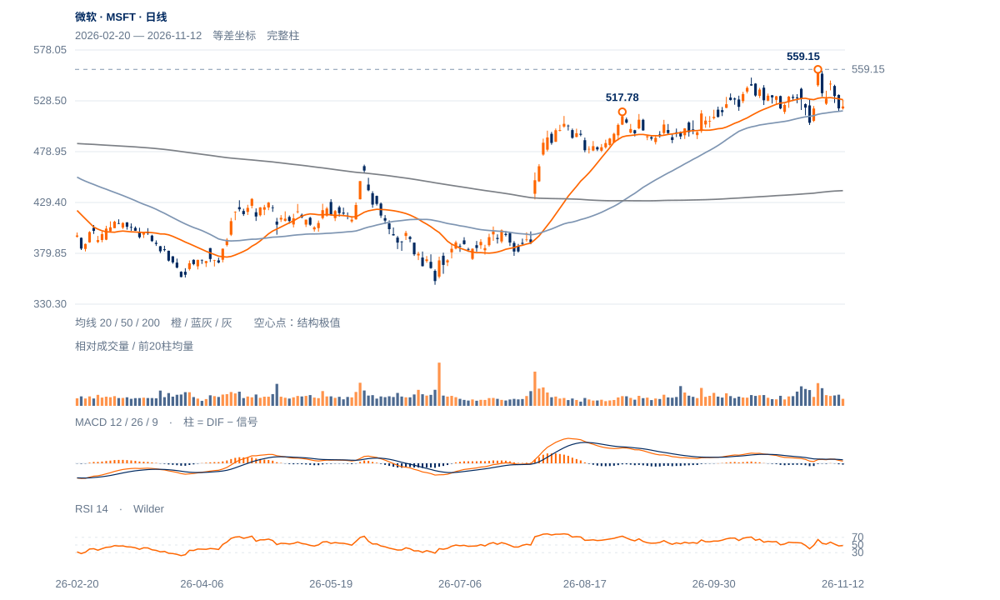

原受损条件已经触发
11日收521.13低于原531.22，12日仅收523.00；当日最高529.66也未触及531.22。原支持是否转成反抽阻力比RSI小幅回升更有分辨力。
未来1—5日仍偏向弱势反抽，531.22—537.22未收回前不提高短线判断；1—3周上升背景尚未全面破坏，应与近端转弱分层处理。

查看大图 ↗11日收521.13低于原531.22，12日仅收523.00；当日最高529.66也未触及531.22。原支持是否转成反抽阻力比RSI小幅回升更有分辨力。
12日上影占振幅68.9%、量比0.70，20日OBV方向余额约-0.315。10—11日连续下行后仅小幅回收，尚缺有力的相反跟进。
现价略高于50日线518.72，远高于200日线440.97；截至11月6日完整周收530.61在10/30周均线上方、周RSI64.85。近端受损还不等同长期下跌反转。
518—520附近暂有承接、完整周线较强；若回收531.22后继续站稳537.22，当前弱反抽解释应撤回。